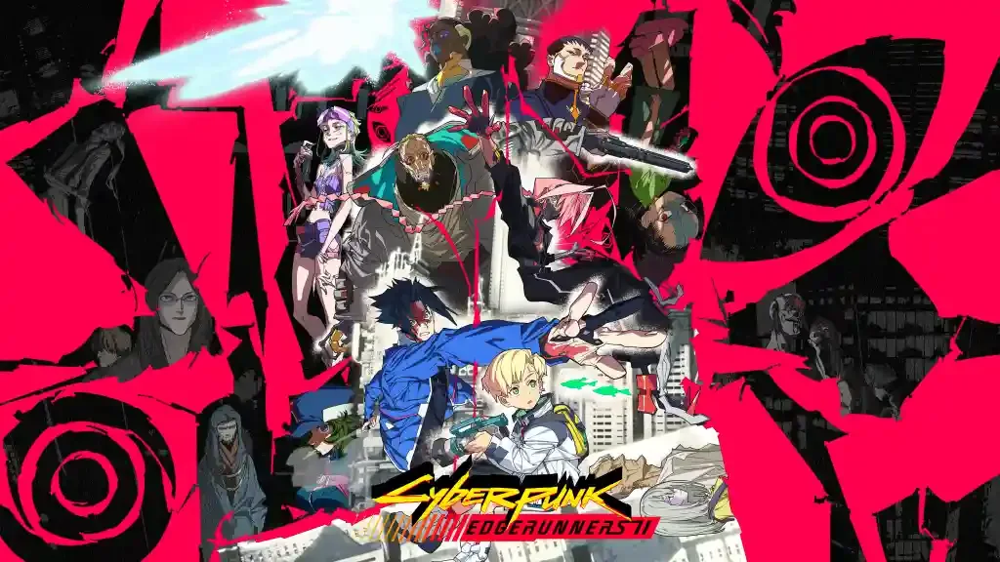
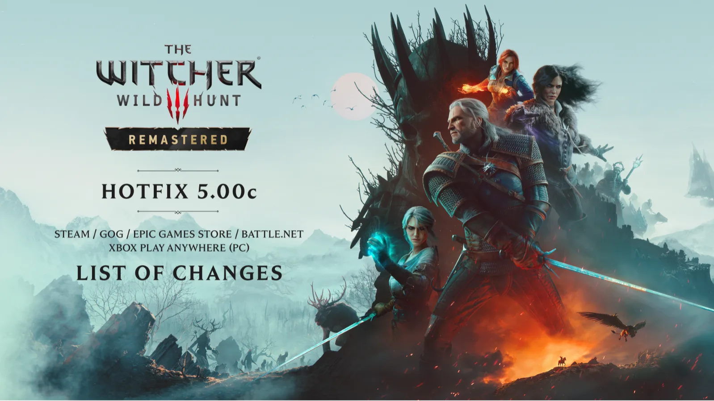
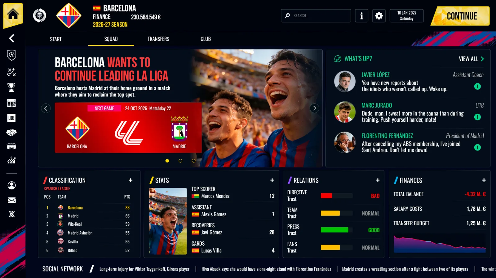
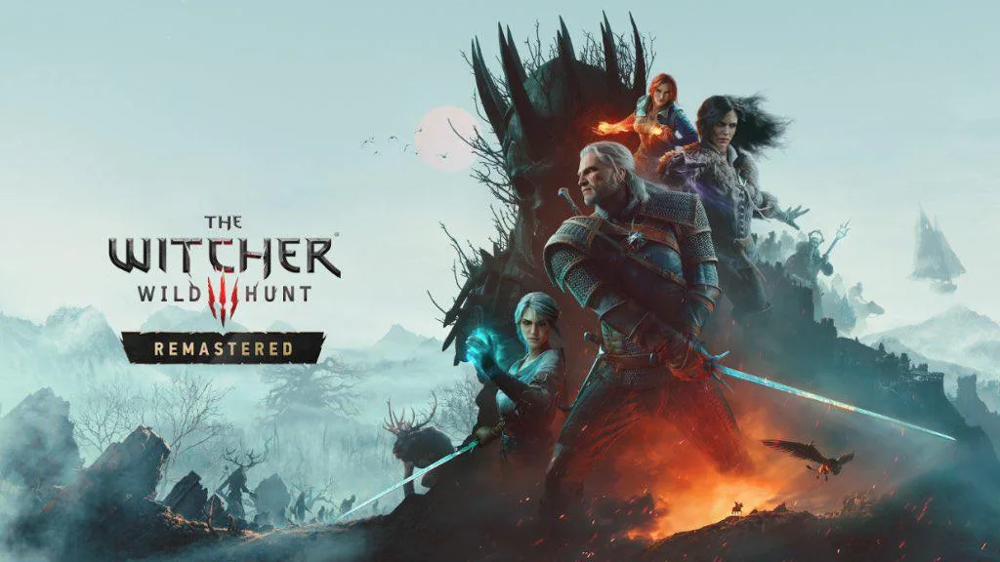

Luiso · 21 de octubre de 2026 · 3 min de lectura
La ciudad de Night City se prepara para recibir nuevo contenido. CD Projekt RED confirmó que Cyberpunk 2077 tendrá una actualización gratuita el 22 de octubre, bautizada Edgerunners 2 Update o versión 2.5. El parche está vinculado con el estreno de Cyberpunk: Edgerunners 2, la nueva serie animada creada por CD Projekt RED y el estudio japonés TRIGGER, que ya se encuentra disponible en Netflix.
La actualización llegará inicialmente a PC, PlayStation 5 y Xbox Series X|S. La compañía confirmó que la versión para Nintendo Switch 2 se publicará más adelante, aunque todavía no comunicó una fecha concreta para esa plataforma. El contenido será gratuito para quienes tengan el juego y sumará elementos inspirados en el universo del anime, además de otras funciones y novedades.
El anuncio se realizó el 20 de octubre, coincidiendo con el estreno de los diez episodios de Cyberpunk: Edgerunners 2 en Netflix. A diferencia de una adaptación directa de la historia, la serie funciona como una producción independiente ambientada en el mismo universo de Cyberpunk 2077, con un elenco de personajes nuevo y otra mirada sobre la violencia, las ambiciones y la vida cotidiana de Night City.
Entre los contenidos adelantados antes de la presentación detallada se encuentran opciones para personalizar el ciberware y un nuevo estilo de combate con dos armas a la vez. CD Projekt RED anunció que compartiría más información durante una emisión especial de REDstreams prevista para el 21 de octubre, junto con la publicación de las notas oficiales del parche.
La personalización del ciberware resulta especialmente relevante para un juego cuya progresión gira alrededor de las modificaciones corporales y las distintas configuraciones de combate. Sin embargo, hasta que se publiquen las notas completas conviene no dar por confirmados detalles específicos que la compañía todavía no haya descrito, como la lista definitiva de objetos, los requisitos de desbloqueo o los cambios exactos en el equilibrio de las armas.
El uso de dos armas simultáneamente también apunta a ampliar las posibilidades de enfrentamiento y la variedad de estilos disponibles para recorrer Night City. Aun así, será necesario conocer la implementación final para determinar cómo se integrará con las habilidades, el equipamiento y los sistemas de progresión que ya existen en el juego.
La actualización llega en una etapa en la que la franquicia sigue expandiéndose más allá del videojuego. La primera temporada de Cyberpunk: Edgerunners contribuyó a reforzar el interés por el universo de Cyberpunk 2077, y ahora la secuela animada funciona como una nueva oportunidad para atraer a jugadores que quieran regresar a Night City o descubrirla por primera vez.
La estrategia también mantiene una conexión directa entre el contenido audiovisual y el videojuego, pero sin convertir la actualización en una expansión de pago. En este caso, CD Projekt RED confirmó que las novedades de la versión 2.5 serán gratuitas, una diferencia importante para quienes ya tienen el juego y esperan nuevos motivos para volver a jugar.
Por ahora, la fecha principal es clara: el parche llega el 22 de octubre de 2026 a PC, PlayStation 5 y Xbox Series X|S. Los jugadores de Nintendo Switch 2 deberán esperar el anuncio de la fecha correspondiente a su plataforma. Con las notas completas previstas para publicarse junto con la presentación de hoy, todavía queda por conocer el alcance definitivo de una actualización que busca conectar el juego con el nuevo capítulo animado de la franquicia.

1 de octubre de 2026CD Projekt Red lanzó una nueva actualización para The Witcher 3: Wild Hunt Remastered que corrige problemas de DLSS en PC, realiza ajustes de iluminación y mejora la paridad entre las versiones de consola y PC. El estudio también prepara un hotfix para solucionar problemas de guardado detectados por algunos jugadores.

1 de octubre de 2026SEGA y Sports Interactive confirmaron que Football Manager 27 llegará el 10 de noviembre a PC, PS5, Xbox Series, iOS y Android. La nueva edición también estará disponible desde el primer día mediante Game Pass, mientras que la versión móvil llegará a través de Netflix.

28 de septiembre de 2026CD Projekt Red detalló los horarios en los que estará disponible la gran actualización gratuita de The Witcher 3: Wild Hunt y confirmó el tamaño aproximado de los archivos que deberán descargar los jugadores. La actualización incorpora las mejoras de la versión remasterizada para Nintendo Switch 2 y otras plataformas.
Cargando comentarios…